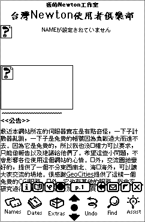
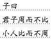

Dec '97
(C)1997 GNUE(鵺)DATE: 1998/1/1

- [Name] GNUE(鵺)
- いまだに読み方を知らない人がいるらしい.....
鵺 が読めれば迷うはずはないんだけどねぇ(^^;G を発音せずに ヌエ[NUE] と読んで下さい。
- [SmallTalk] MacSqueak 1.2
- いいぬまさんとこで紹介されていた MacSqueak 1.2 をダウンロードしてみた。
ファイルサイズは 300K ぐらいしかない。最近の数MBっていうソフトと比べると非常に小さいね。たぶん、基本的なインプリメントだけなんだろう。ただし、使用メモリは最低 8MB ぐらい必要。
う～ん、よくも悪くも SmallTalk といったところ。新しいインプリメントというのでもっとモダンなものを期待したのだけど、見た目はまんま SmallTalk 80。歴史の勉強として SmallTalk を習うにはいいかもしれない。
SmallTalk は“箱庭”だね....
- [Book] 今日の収穫
- Sprit of Wonder（鶴田謙二 著）モーニングKCDX
なんとなく....
- 耶律楚材 下（陳瞬臣 著）集英社文庫
まだ上を読み終わってないけど、もう正月に入っちゃうので買いだめ。
97/12/29
- [Book] 今日の収穫
- 耶律楚材 上（陳瞬臣 著）集英社文庫
珍しく歴史物。ジンギス・ハンの宰相“耶律素材”の物語です。
97/12/26
- [Newton] not Newton 3000
- いろんな Webサイトで REALITY の Newton 3000? というのを取り上げているねぇ。でもみんな Newton なんて気をつけてウォッチしていないから見落としているだけで、１年以上前に日本のMac雑誌（雑誌名は忘れた(^^;）に小さく載ったことがあるんだよね。
ちょうど同じくらいの頃 eMate300 が「新しいPowerBook」という間違ったキャプションで載ってたね。
ちなみに、The Newton Shop の掲示板に貼ってある切り抜きは、Mac雑誌のほうとは別でデザイン雑誌に載ったのをユーザグループの人がみつけたやつだね。
でも、このデザインほんとにいいよね。是非製品化してほしいなぁ。
97/12/25
- [M:TG] 今日のデュエル
- 前回ほど惨敗ではないけど、やっぱり負け越しかな(^^;
魔法風雲會第五版を１パック購入。
97/12/24
- [Newton] Xmas＆お年玉 企画
- Xmas＆お年玉企画として『HeapMagicの謎にせまれ！』を行います。みなさん、応募待ってます(^^)
97/12/19
- [Newton] (予告) Xmas＆お年玉 企画
- 『HeapMagic の謎にせまれ』（仮）という企画を考えています。まだ、応募要項などは決まっていませんが、HeapMagic の確信をいいあてた人に何かプレゼントをさしあげたいと思っています。
応募内容の中から、確信にせまっているものや、面白い（？）ものはコメントをつけて Web で公開する予定です。
プレゼントは私の手持ちのものやポケットマネーから出すので、あんまり大したものは期待しないで下さね(^^;
97/12/18
- [M:TG] 今日のデュエル
- 数ヶ月ぶりにデュエルをやった。ぐすん、惨敗っす(;_;)
やっぱ、ちゃんとカードを買ってデックを育てないとだめだね。ぜんぜんデックを組んでなかったものなぁ。
- [MagicCap] え～、SANYO の MagicCap 電話！
- 日経ゼロワンを立ち読みしてたら面白いものを見つけた。どうも COM なんとかという展示会で SANYO が MagicCap ベースの電話を展示したみたい（しかも、日本語版）。う～む、まだがんばってたんだ(^^;
アメリカでは OKI が特定市場向けに出しているし、MagicCap の巻き返しはあるか？.........まぁ、ないだろうなぁ(^^;
- [PalmPilot] PalmPilot 100万台突破
- MacWEEK によると PalmPilot の出荷台数が100万台を突破したそうです。
Newton の出荷台数とは桁が違うね(^^;
97/12/17
- [Book] 今日の収穫
- アタゴオル アタゴオル物語篇 (4)（ますむら・ひろし 著）スコラ漫画文庫
谷山浩子を BGM にアタゴオルを読む....？
そういえば最近ヒデヨシはシチューのCMに出てるね。
ちょっと肥りすぎだぞ＞ヒデヨシ（笑）
- YASHA 夜叉(3)（吉田秋生 著）別コミ フラワーコミックス
Banana Fish が好きだった人にはお薦め。
ハードボイルド＋ちょっとＳＦかな。
97/12/15
- [Book] 今日の収穫
- 無責任三国志(5) 三匹快進撃（吉岡平 著）富士見ファンタジア文庫
う～ん、ほとんど惰性ですね(^^;
このシリーズは一番最初のタイラーが一番面白かったんですけどねぇ....
- [Media] フラッシュパス
- そういえば Smart Media をフロッピィドライブで読み書きするためのフラッシュパスがようやく発売されたみたい。これで Smart Media の普及も加速化するのかな。あと Compact Flash 用のアダプタ（まぁ、政治的な理由で無理だろうけど(^^;）が出れば Smart Media は天下無敵だね。
- [VAIO] BSD/OS on VAIO 505
- 最近、非常に物欲を刺激するものがある。SONY の VAIO 505 である。ところで VAIO 505 に BSD/OS をのっけている人がいるんだねぇ。vaio505(PCG-505)君とあそぼう という Web Page である。ちなみに購入してから１度も Windows は走らせてないらしい(^^;
それにしても VAIO 505 に Windows はださいというのはみんなの共通の認識なのね(^^;
ああ、これで Rhapsody for PC-Compatible さえ動作すれば（無理だろうなぁ）すぐにでも購入するのに....
- [OS9] CodeWarrior for OS-9
- PC WEEK ONLINE JAPAN によるとマイクロウェア・システムズとメトロワークが CodeWarrior for OS-9 を発売したそうです。ただし、発売記念キャンペーン価格で２４万８０００円（うぇ～～！）。ま、コンシューマ向けじゃないってことなんでしょうねぇ。
97/12/14
- [Newton] 中国語のホームページを見る
- Newt's Cape と NTEncoding Big5 1.0 を NTUKai Font を使って中国語のホームページを見てみた。
あれっ、よくみたらタイトル以外の部分は Mincho で表示されてしまっているね。まっ、いいか(^^;(^^;(^^;

97/12/13
- [Mailer] クラリスメール 2.0 のデータベース最適化
- 大きくなったメール・データベースの最適化だけど、クラリスメール 2.0 を Optionキーを押しながら起動するといいそうです。
サポートに電話して「FAQに書いてありますが...」と云って教えてもらいました(^^;
“サポートファイル”フォルダの“クラリスメール Q&A 2”ファイルに書いてあったのね。マニュアルのほうしかチェックしてなかったので見逃していました。でも、ちゃんと気がつく人いるのかなぁ。サポートのお姉さんは淀みなく答えてくれたから、もしかしてそういう質問が多いのかも.....(^^;
おっと、書き忘れてた。なお、最適化には非常に時間がかかります。
- [Mailer] クラリスメール 2.0 のオンラインユーザ登録
- オンラインユーザ登録だけど .co.jp が正しいみたいね。ただ、サポートに電話したけどいまいち要領を得なくて心配だったので、結局ハガキで出してしまった(^^;
97/12/11
- [Book] 今日の収穫
- モンコレQ&Aブック（グループSNE 編）角川ミニ文庫
- モンコレ カード・リスト（富士見町モンコレ研究会 編）角川ミニ文庫
トレーディング・カードゲーム『モンスターコレクション』の解説本。以前、Magic: The Gathering (M:TG) で「文庫本タイプの解説本があったらいいのにね」と云ってたのが、モンコレのほうで実現しちゃったね。
実はまだモンコレは持ってないんだ(^^;
じゃ、なんで解説本を買ったかというと M:TG タイプのオリジナル・ゲーム（もちろんコンピュータのね）をつくるのに参考になるかと思ったわけ。まぁ、まだ思考段階なのでちゃんと完成するかどうかはわからないけどね。
- Papa told me(19)（榛野なな恵 著）ヤングユーコミックス
一部に私が古いまんが（復刻版）ばかり読んでいるという噂もあるが、一応新作を読むこともあるんだよね.......(^^;(^^;(^^;
97/12/10
- [Newton] 中国語フォント
- 
Newton で中国語フォントを表示してみた。明朝フォントとは違って味わいがあるねぇ。
中国語の入力方法なんてわからないので、日本語で入力してフォントを変更しただけである。Unicode ならではの方法だね。
ちなみにこの中国語フォントはサイズが１種類だけのようだ。サイズを変更しても行間が変わるだけで大きさは変わらない。
- [Mailer] クラリスメール 2.0v2
- ようやく製品版を購入した。
ところでオンラインユーザ登録だけど、ちゃんとできた人いますか？ 普通に送ると address がないからとエラーになっちゃうんだよね。とりあえず、.com を .co.jp に変更して送ったらうまく送れたけど、ちゃんと登録されるのだろうか........
ちなみに、添付のペーパーには「AppleScript は使わないでくれ。添付の“オンラインユーザ登録について”ファイルを読んでくれ」って書いてあるんだけど、そのファイルには AppleScript の“クラリスメールユーザ登録”を使ってくれと書いてあるんだよね :-{
P.S. なんかクリスマス・キャンペーンみたいでクリスマス・ソングのシングルCDがついてきたよん。
- [PSION] EPOC32 の日本語化
- 日本語のニュースリリース も Web Page で見れるようです。
97/12/9
- [Book] 今日の収穫
- ニワトリの歯(下)（スティーヴン・J・グールド 著）ハヤカワ文庫NF
上を読み終わったので下を買ってきました。
- 姫君の塔（神坂智子 著）角川書店
- 風の輪・時の和・砂の環（神坂智子 著）角川書店
神坂智子のシルクロード・シリーズの III と VI です。IV と V が抜けてしまった....
- [PSION] EPOC32 の日本語化
- PSION は管理工学研究所と協力して EPOC32（PSION SERIES 5 の OS）の日本語化を行うらしい（正式なニュースリリースだよん）。リリースは 1998 年第２四半期を予定。
でも、このニュースリリースを読んでみるとあくまでもソフトウェアの日本語化についてだけで、ハード（PSION SERIES 5）に関する言及はまったくない。PSION SERIES 5（あるいは時機種？）の日本語版を考えているのか、GeoFox のように OS をライセンスするのか。
日本のメーカーは Windows CE をつくっているところが多いから、Windows CE が失敗した場合の保険として、同じハードウェアで２つの OS を選択できるようにするのがいいかもね。
97/12/6
- [Newton] 中国語環境
- 台湾の Chun-Hsien Lin という人から Big5 （中国語）の変換モジュール NTEncoding Big5 1.0 を作成したというメールをもった。NTEncoding が中国語でも使われるなんて嬉しいねぇ(*^-^*)
彼のホームページでは Newton でどうやって中国語を見れるようにするかというのも紹介している。（中国語と英語がまじったページなので Chinese Language Kit がないと中国語がばけばけになるので注意）
中国語フォントはもちろんインプットメソッド（どういう方式かはよくわからないが）もちゃんとあるみたいだ。泣かせるのは、アップル（株）の日本語パッチをダウンロードするのに「日本語が文字化けするから Japanese Language Kit を Mac にインストールしてからダウンロードしよう」って書いてあることだ。
ちなみに、彼は i-mail 1.0pr4 + NTEncoding Big5 1.0 でちゃんと動作したと報告してくれた（でも、Big5 って 8bit だから 7bit の ISO-2022-CN を使ったほうがいいと思うけど、どうなんだろ？）。
興味のある人は、Newton の中国語化にチャレンジしてみてはどうかな。
97/12/4
- [Web] log page のリンクを修正
- log page のリンクが外れてたので修正しました。
それにしても HTML って面度臭いね。根が怠け者なんで HTML みたいなのは嫌いだな。それにしても、何でみんなこんな原始的なものをありがたがるのかねぇ。マスコミなんて最新技術みたいに騒ぎ立てるし、頭が悪いんじゃないの。
そろそろ Post HTML が出現していい頃かもね....ま、誰もつくらなきゃ自分でつくればいいだけか :-P
- [Newton] NTEncoding 1.1 のドラフトを追加
- ドラフトに NTE_1.1_prefs_of_defs.txt と NTE_1.1_def_id.txt を追加しました。
- [Newton] 『NTE 1.0 マニュアル』正誤表
- 239行目に次の間違いがありました。
誤：MacRoman の文字列 str を MacRoman へコード変換します。
正：MacRoman の文字コード code を UNICODE の文字列へコード変換します。
97/12/3
- [Book] 今日の収穫
- ニワトリの歯(上)（スティーヴン・J・グールド 著）ハヤカワ文庫NF
ごぞんじ「ワンダフル・ライフ」「パンダの親指」のグールドの進化論エッセイ。著者近影が何となくアラン・ケイに似ている（口髭をはやした白人はみんな同じように見えるのか(^^;？）